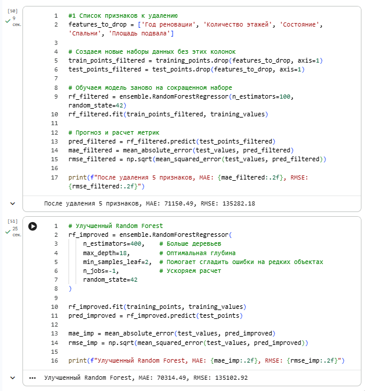
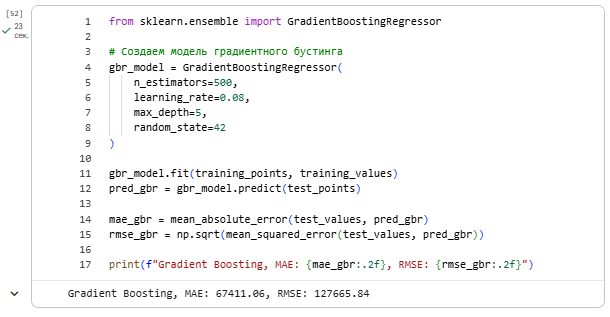

Лабораторная работа №5
Overview
- Дата: 09.04.2026
- Тема: Регрессия с применением Scikit-Learn
- Статус: [Completed]
Link
Objective
Общая тема: Предсказание цен на недвижимость.
Постановка задачи анализа данных: Целью данной задачи является прогнозирование стоимости домов в округе Кинг с помощью построения регрессионных моделей и их анализа.
Task
- Сделайте копии заданий s1p1-predict_house_price-tasks.ipynb, получив собственный ноутбук с помощью сервиса Google Colab или локально.
- Заполните пропуски в борде, дополнив кодом ячейки с соответствующим комментарием/заголовком.
- Выполните самостоятельную работу, предложенную в конце борда: в частности, исследуйте другие модели для реализации предсказания значений. Постарайтесь построить более точную модель, модель, имеющую ошибку, меньшую чем при использовании моделей, используемых в борде.
- Исследуйте параметры модели Random Forest и постарайтесь получить ещё более низкое (чем в текущей реализации) значение ошибки для этой модели.
- Исследуйте (возможно с помощью LLM) каким образом обученную модель можно интегрировать с веб-сервисом, реализованным с помощью веб-фреймворка Flask / Django / FastAPI и опишите тезисно пошаговый алгоритм, что необходимо для этого сделать.
- Представить отчет на сайте портфолио и указать ссылку на сайт (на самом сайте - указать ссылку на собственный ipynb-борд с заполненными ячейчками и самостоятельным заданием.)
- Убедиться в том, что доступ к нему открыт.
Implementation
1-2.
Работа выполнена в Google.collab, ссылка на борд прикреплена в начале страницы. Дополнительное задание по теме разобрано в конце доски.
3-4. Исследование альтернативных моделей для реализации предсказания значений
1) Оптимизация параметров модели Random Forest
Улучшение базовой модели Случайного Леса реализовано путем исследования гиперпараметров, удалось добиться снижения ошибок MAE и RMSE.
Для этого было:
- Увеличено количество деревьев (n_estimators) до 400.
- Установлена оптимальная глубина (max_depth=18).
- Добавлен параметр min_samples_leaf=2, что позволило модели лучше обобщать данные и меньше реагировать на редкие «шумные» объекты.
В результате оптимизации - MAE снизилась с 71150.49 до 70314.49 - RMSE снизилась с 135282.18 до 135102.92.2

2) Исследование альтернативных моделей (Градиентный бустинг)
Согласно рекомендациям из статей на Хабре и ODS, для достижения минимальной ошибки был выбран алгоритм Gradient Boosting Regressor. Градиентный бустинг строит ансамбль деревьев последовательно, где каждое следующее дерево минимизирует ошибку предыдущих.
Параметры модели:
- n_estimators=500
- learning_rate=0.08
- max_depth=5

Итоги сравнения: Использование градиентного бустинга позволило получить самую точную модель среди всех протестированных. Ошибка MAE сократилась более чем на 3700 единиц по сравнению с базовым случайным лесом. Это подтверждает тезисы из изученных статей: бустинг является более эффективным инструментом для решения задач регрессии на табличных данных со сложными зависимостями.
5. Интеграция модели с веб-сервисом
Для интеграции обученной модели (XGBoost или Random Forest) в веб-сервис обычно выбирают FastAPI или Flask.
1) Сериализация (сохранение) модели и трансформеров
В регрессии крайне важно, чтобы данные на входе в сервис были обработаны точно так же, как при обучении.
Инструмент: joblib или pickle.
Действие: Нужно сохранить не только саму модель (joblib.dump(reg_model, 'house_price_model.pkl')), но и объект-скалер (например, StandardScaler или MinMaxScaler), если он использовался. Без него предсказания будут случайными.
2) Выбор веб-фреймворка FastAPI: Идеален для регрессионных моделей, так как позволяет быстро валидировать типы данных (площадь должна быть числом, а не строкой).
Flask: Классический вариант для небольших сервисов.
3) Написание серверного кода Создается файл (например, app.py или main.py):
Загрузка: При запуске сервера загружаем модель и скалер: model = joblib.load('house_price_model.pkl') scaler = joblib.load('scaler.pkl')
Маршрут (Endpoint): POST-запрос принимает характеристики объекта (площадь, этаж, год).
4) Обработка входящих данных (Preprocessing) Для регрессии этот этап критически важен:
Заполнение пропусков: Использование медианных значений из обучающей выборки.
Масштабирование: Применение загруженного scaler.transform() к новым данным.
Логарифмирование: Если в модель обучалась на log(price), то и входные признаки должны пройти ту же трансформацию.
5) Выполнение прогноза (Inference) Ипользуем метод predict().
Действие: raw_prediction = model.predict(input_data).
Обратное преобразование: Если целевая переменная была логарифмирована, на этом этапе нужно применить экспоненту: final_price = np.expm1(raw_prediction).
6) Возврат результата Веб-сервис возвращает конкретное число.
Формат: JSON с предсказанной стоимостью.
Доп. логика: Можно добавить форматирование (например, округление до целого числа) или расчет "цены за квадратный метр".
7) Контейнеризация (Docker) Сборка образа, включающего Python, библиотеки (scikit-learn, pandas) и файлы модели. Это гарантирует, что на сервере цена будет считаться точно так же, как на локальном устройстве.
Conclusion
def hello_world():
print("Lab 5 completed")